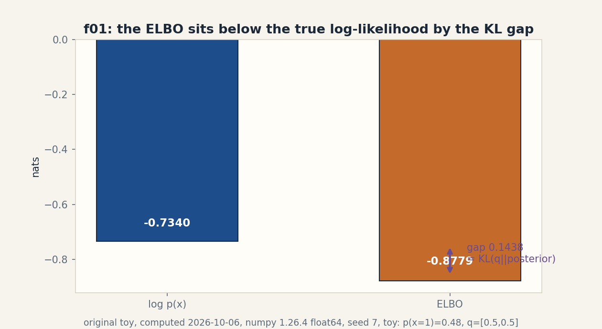
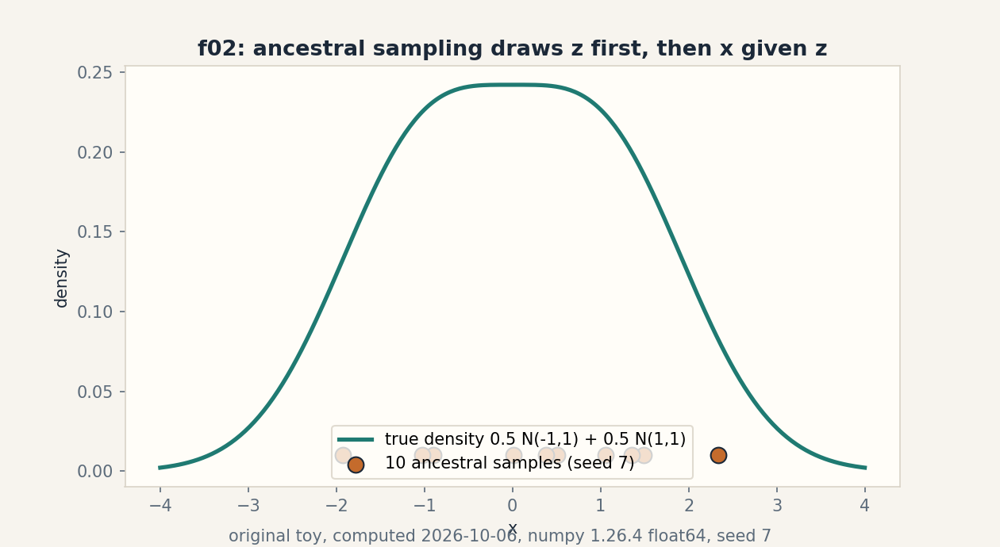
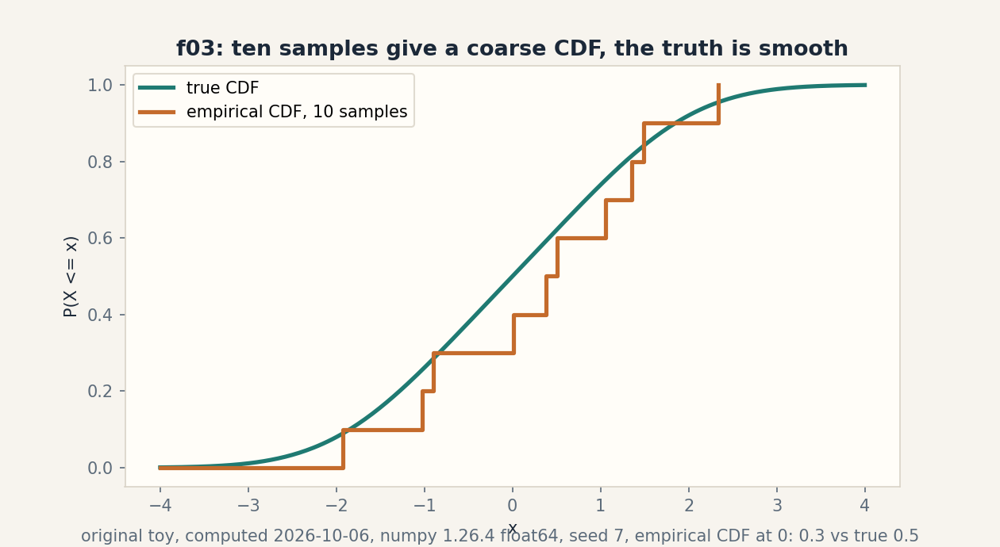

U10 · Generative bridge and mathematical synthesis
Lesson 10, Generative bridge and mathematical synthesis
Date: 2026-10-06. Unit: math-ml-U10. Leaf concepts C01-C12. Prerequisites: P08, P18, P22. Local remediation R70-R78 in prerequisites.md. Source attribution PENDING on all rows (G2 open: no transcript inspected).
Source mapping
Title map: Lec 65 Introduction to Generative Models, Lec 66 GANs, Lec 67 VAEs, Lec 68 LLMs intro, Lec 69 RL intro (titles only, SRC-04). The Lec 68/69 titles are named here for map honesty. this lesson does not teach LLMs or RL (G7 open). No spoken content inspected. Original toys with computed numbers. Figure ids f01-f03 in assets/u10/ and visual_audit.md.
Scope and objectives
After this lesson the learner can: sample from a latent generative process by ancestral draws. compute the ELBO and its KL gap on a discrete toy. run the GAN minimax on toy numbers. contrast VAE and GAN objectives with a computed JSD. tell samples apart from densities. separate the roles of regularizer and optimizer. audit the assumptions behind the ELBO. produce toy counterexamples to three loose claims. separate predicted from measured numbers. critique a research claim with lesson evidence. defend the unit orally. and audit the source gaps of this whole course.
How to read this lesson
Shell numbers (0-10) mark the Russian-doll ladder position. Numbers marked “computed 2026-10-06” came from compute_completion.py and compute_completion2.py (numpy 1.26.4, float64). C07-C12 are synthesis: the contract applies, with proof audit and critique in place of code where code is not the point.
C01, latent generative process
Shell 0: the question is how new data gets made. The toy: z in {0, 1} with p(z) = 0.5 each. x given z=0 is N(-1,1), x given z=1 is N(1,1).
Shell 1, mental model: pick the hidden label first, then draw the visible point from its bell. Ancestral sampling: z ~ p(z), then x ~ p(x|z). Ten draws with seed 7: z = [1,1,1,1,1,1,1,0,0,0], x = [0.0084, 1.0601, 2.3402, 0.5078, 0.3795, 1.4898, 1.3569, -0.8946, -1.9305, -1.0293]. Computed 2026-10-06.
Shell 2, objects: latent z (unobserved), visible x (observed), joint p(x, z) = p(z) p(x|z), marginal p(x) = sum_z p(x, z). Shapes: scalars here.
Shell 3, the marginal at x = 0: 0.5 Phi(1) + 0.5 Phi(-1) = 0.5. The empirical CDF from the ten samples at 0: 3/10 = 0.3. Gap 0.2 is honest small-n noise, not a bug. Computed 2026-10-06.
Shell 4, code:
z = rng.integers(0, 2, n)
x = np.where(z == 0, -1, 1) + rng.standard_normal(n)
Shell 5, check: the z shares are 7/3, near 5/5 within noise. The x values near -1 come from z = 0 draws.
Shell 6, costs: sampling is O(n). Density evaluation needs the sum over z: O(n K) for K components.
Shell 8, alternative: a direct density p(x) with no latent (e.g. a histogram). Simpler. cannot generate by parts or explain the two humps.
Shell 7, failure case: label swap. Rename z=0 to z=1 and z=1 to z=0: the x distribution is identical. The latent labels are unidentifiable from x alone. Any claim about “component 0” needs an anchor outside the data.
Shell 9, research: the number of modes from samples. Question: with n = 10, can any test tell one bell from two? Falsifiable: run a dip test at n = 10, 100, 1000 and record power.
Figure f02 plots the true mixture density with the ten samples as a rug. Shell 5 reuses the CDF in C05.
C02, VAE
Shell 0: the question is how to fit the latent model of C01 when the posterior p(z|x) has no closed form. The toy is Gaussian: q(z|x) = N(0.4, 0.5^2), p(z) = N(0, 1), one observed x = 0.7, decoder p(x|z) = N(z, 1).
Shell 1, mental model: the encoder guesses the latent distribution. the decoder reconstructs x from a sample. the KL term keeps the guess near the prior. ELBO = E_q[log p(x|z)] - KL(q||p).
Shell 2, objects: mu = 0.4, sigma = 0.5, both scalars. Assumption: q is Gaussian, p is standard Gaussian, decoder variance is 1.
Shell 3, computed numbers. KL = 0.5(mu^2 + sigma^2 - 1 - log sigma^2) = 0.5(0.16 + 0.25 - 1 + 1.3863) = 0.3981. One sample z = 0.55: log p(x|z) = -0.5(0.7-0.55)^2 - 0.5 log(2 pi) = -0.9302. ELBO (one sample) = -1.3283. Computed 2026-10-06.
Shell 4, code: the reparameterization trick z = mu + sigma eps, eps ~ N(0,1), so gradients flow through mu and sigma.
Shell 5, check: KL >= 0 (0.3981). At mu = 0, sigma = 1 the KL is exactly 0: the encoder that says “I know nothing” pays no KL price.
Shell 6, costs: the encoder outputs two numbers per latent dim instead of one. One extra sample per training step.
Shell 8, alternative: a plain autoencoder (no KL, no sampling). Sharper reconstructions, no generative story: sampling its latent space hits dead zones.
Shell 7, failure case: KL collapse. The decoder gets so good it ignores z. the encoder retreats to the prior (KL -> 0) and the latent carries no information about x. See interview T1 for the executed numbers.
Shell 9, research: the beta schedule. Question: does annealing beta from 0 to 1 avoid collapse on a tiny sequence toy? Baseline: fixed beta = 1.
Figure: the C02 plate is an equation block (KL, recon, ELBO). The KL symbol is reused in C06.
C03, GAN
Shell 0: the question is how to learn a sampler without a likelihood. The toy: a discriminator D scores real x at 0.8 and fake x at 0.3.
Shell 1, mental model: two nets play a game. D tries to tell real from fake. the generator G tries to fool D. The value V = E[log D(x_real)] + E[log(1 - D(x_fake))]: D maximizes, G minimizes.
Shell 2, objects: D(x) in (0,1), G(z) a sample. Assumption: D is near its optimum for the current G when G updates.
Shell 3, computed numbers. V at start: log 0.8 + log 0.7 = -0.5798. G improves until D(fake) = 0.5: V = log 0.8 + log 0.5 = -0.9163. Lower V is better for G. Computed 2026-10-06.
Shell 4, code: alternate one D step (up the gradient of V) with one G step (down the gradient of log(1 - D(G(z)))).
Shell 5, check: at D(fake) = 1 the generator term log(0) = -infinity: the loss saturates in code and must be clipped. The check is the clip.
Shell 6, costs: two networks, alternating steps, no likelihood to monitor. Training is the notoriously unstable part.
Shell 8, alternative: the VAE of C02. Likelihood- based, stable, blurrier samples. Selection boundary: sample sharpness (GAN) versus training stability and latent arithmetic (VAE).
Shell 7, failure case: mode collapse. G finds one x that fools D and outputs it always. D cannot punish repetition with the pointwise loss. V stops moving and the samples are one point. The defense is minibatch information or a different divergence.
Shell 9, research: the collapse detector. Question: does the batch variance of G(z) predict collapse before samples visibly degrade? Falsifiable on a toy that is forced to collapse.
Figure: the C03 plate is a table (stage, D(fake), V). Two rows. the falling V is the claim.
C04, objective differences
Shell 0: the question is what each objective actually minimizes. The toy distributions: p = [0.7, 0.3], q = [0.4, 0.6], m = (p+q)/2.
Shell 1, mental model: the VAE maximizes a lower bound on log-likelihood: it wants q to cover all of p’s mass (mode covering, blurry). The GAN at D-optimum minimizes the Jensen-Shannon divergence: it wants samples nobody can distinguish (sharp, possibly mode dropping).
Shell 2, objects: JSD(p||q) = 0.5 KL(p||m) + 0.5 KL(q||m), symmetric, in [0, log 2].
Shell 3, computed numbers. JSD = 0.0462 nats. Computed 2026-10-06. Small: the two toy distributions are close.
Shell 4, code: the three-line JSD above. assert symmetry JSD(p,q) == JSD(q,p) and the log-2 ceiling.
Shell 5, check: JSD >= 0, equality only at p = q. The bound log 2 = 0.6931 nats holds.
Shell 6, costs: the objectives cost the same to write. they differ in what failure looks like.
Shell 8, alternative: the Wasserstein distance (WGAN). Meaningful even when supports do not overlap, where JSD saturates at log 2 and gives no gradient. Selection boundary: overlapping support (JSD fine) versus disjoint support (Wasserstein).
Shell 7, failure case: optimizing likelihood when the goal is sample quality. The ELBO rewards covering every mode a little, which paints probability mass where no data lives: blurry images, muddy audio. The metric and the goal disagree. U05-C02 returns.
Shell 9, research: the objective-metric gap. Question: on a tiny image toy, does JSD between real and fake batches track human quality rankings better than the ELBO? Falsifiable with a fixed rater protocol.
Figure: the C04 plate is a table (objective, minimizes, failure mode). Three columns. the contrast is the lesson.
C05, samples versus densities
Shell 0: the question is what ten draws can and cannot say. The toy reuses the C01 samples.
Shell 1, mental model: samples answer “make me a new x”. Densities answer “how likely is this x”. The empirical CDF from samples is a staircase. the true CDF is smooth.
Shell 2, objects: empirical CDF F_n(x) = (1/n) sum [x_i <= x]. True CDF F(x) = 0.5 Phi(x+1) + 0.5 Phi(x-1).
Shell 3, computed numbers. At x = 0: F_10 = 0.3, F = 0.5. The staircase jumps 0.1 per sample. Computed 2026-10-06.
Shell 4, code: np.mean(x <= 0) for the empirical side. the Phi formula for the true side.
Shell 5, check: F_n never falls, right- continuous, 0 to 1. With n = 10 the valley between the modes is invisible: no sample fell near x = 0 from the gap side… the honest note is that ten samples cannot resolve the two-hump shape reliably.
Shell 6, costs: samples are cheap to draw, expensive to judge (need many). Densities are expensive to normalize, cheap to score.
Shell 8, alternative: kernel density estimation smooths the staircase. Better picture, new bandwidth assumption. Selection boundary: raw samples for generation, KDE for a quick density sketch, true density when the formula exists.
Shell 7, failure case: the histogram with 3 bins on ten samples shows one blob. A reader concludes “one bell”. The data never said that. the binning did.
Shell 9, research: the sample complexity of seeing two modes. Question: at what n does a two-sample test reject one bell at 5%? Falsifiable by simulation over n.
Figure f03 draws both CDFs. The staircase versus the smooth curve is the claim.
C06, regularization and optimization distinctions
Shell 0: the question is which knob does what. The toy reuses the C02 numbers: recon = -0.9302 (one sample), KL = 0.3981.
Shell 1, mental model: three separate jobs. The KL term regularizes the encoder (keeps q near p). Weight decay regularizes the weights (keeps them small). Adam optimizes (chooses the steps). Conflating them causes misdiagnosis.
Shell 2, objects: beta-VAE total = recon + beta KL. Weight decay adds lambda ||w||^2 to the loss. Adam changes the update, not the loss.
Shell 3, computed beta sweep. beta = 0: total -0.9302 (plain autoencoder, no KL price). beta = 1: -1.3283 (the VAE). beta = 10: -0.9302 + 10(0.3981) = -5.0713. The KL term dominates at beta = 10 and the optimizer prefers the collapsed q (KL 0) with total -1.6695 over the informative q at -5.0713. Computed 2026-10-06.
Shell 4, code: the sweep is one line per beta.
Shell 5, check: at beta = 0 the optimum ignores q entirely. At beta -> infinity q = p and the latent is dead. The check is the two endpoints.
Shell 6, costs: beta is free to change. its effects are not.
Shell 8, alternative: AdamW decouples weight decay from the adaptive step. It is not “Adam with L2”: the L2-inside-Adam version gets scaled by the adaptivity and behaves differently. Selection boundary: state the variant by name.
Shell 7, failure case: “the optimizer regularizes.” No: Adam finds minima faster. it does not prefer flat ones. Attributing generalization to the optimizer misdirects the fix when the real problem is the objective.
Shell 9, research: the disentanglement claim for beta > 1. Question: does raising beta on a tiny toy actually separate the latent factors, or just shrink them? Falsifiable with a correlation probe.
Figure: the C06 plate is a table (beta, total). Three rows. the collapse at beta = 10 is the claim.
C07, proof assumptions
Shell 0: the question is what the ELBO proof actually needs. The toy is discrete: z in {0,1}, p(z) = [0.6, 0.4], p(x=1|z=0) = 0.2, p(x=1|z=1) = 0.9. Observe x = 1. Approximate posterior q(z|x=1) = [0.5, 0.5].
Shell 1, mental model: log p(x) = log sum_z p(x, z). Multiply and divide by q, then Jensen pulls the log inside the expectation because log is concave. The gap is exactly KL(q||p(z|x)).
Shell 2, assumptions, each load-bearing. (a) q is a valid distribution: sums to 1, non- negative. (b) The expectation is over q: Jensen applies to E_q, not to an arbitrary sum. (c) Support: where q(z) > 0, p(x, z) must be > 0, or the log hits -infinity. (d) Log is concave on (0, infinity): the inequality direction depends on it.
Shell 3, computed numbers. p(x=1) = 0.6(0.2) + 0.4(0.9) = 0.48. log p(x) = -0.7340. Joint: p(x=1, z=0) = 0.12, p(x=1, z=1) = 0.36. ELBO = 0.5 log 0.12 + 0.5 log 0.36 + log 2 = -0.8779. Gap: -0.7340 - (-0.8779) = 0.1438 = KL(q || posterior) >= 0. Computed 2026-10-06.
Shell 4, code: the five lines above. assert ELBO <= log p(x).
Shell 5, check: the gap equals the KL computed directly: posterior = [0.12/0.48, 0.36/0.48] = [0.25, 0.75]. KL([0.5,0.5]||[0.25,0.75]) = 0.5 log(0.5/0.25) + 0.5 log(0.5/0.75) = 0.1438. Two routes, one number.
Shell 6, costs: the audit costs one careful read. Skipping it costs a false theorem.
Shell 8, alternative: an exact posterior (when conjugate) makes the gap zero and the proof unnecessary. Selection boundary: exact when available, bound otherwise.
Shell 7, failure case: break assumption (c). Set q = [1, 0] while the true posterior puts 0.75 on z = 1: KL is finite here, but in general a q with zeros where the posterior is positive makes the importance weight p/q explode. Support mismatch is the silent killer of variational claims. P08 named it first.
Shell 9, research: the gap as a diagnostic. Question: does the measured ELBO gap track the posterior approximation error on a toy where the posterior is known? Falsifiable: the C07 numbers are the first point.
Figure f01 shows the two bars and the gap. Shell 5 reuses the gap in C08.
C08, toy counterexamples
Shell 0: the question is which loose claims the toys kill. Three claims, three numbers.
Claim 1: “The ELBO equals the log-likelihood.” Counterexample: the C07 toy. log p(x) = -0.7340, ELBO = -0.8779, gap 0.1438 > 0. The ELBO is a bound, not an equality, unless q equals the posterior.
Claim 2: “More trees always help on validation.” Counterexample: the f04 curve. Bagged-stump val MSE: B=1: 0.0513, B=5: 0.0278, B=25: 0.0344, B=100: 0.0335. From 5 to 25 the error rises on six validation points. “Always” is false. the honest claim is “usually, within noise”.
Claim 3: “The latent labels are meaningful.” Counterexample: the C01 label swap. Swap the names of z=0 and z=1: p(x) unchanged, samples unchanged, every observable identical. The labels carry no information without an anchor.
Shell 5, check: each counterexample reuses computed numbers from this build, not new ones. No fresh toys were invented for the occasion.
Shell 7, the meta-failure: a counterexample outside the claim’s conditions proves nothing. The f04 rise needs the “six validation points” qualifier. with n = 10^4 the curve would be monotone. State the regime with the kill.
Shell 9, research: the counterexample habit as a review tool. Question: for each theorem in U01- U09, can one toy break one assumption? That audit is the RUN 6 job.
Figure: the C08 plate is a table (claim, killer number, regime qualifier). Three rows.
C09, implementation evidence
Shell 0: the question is whether the code agrees with the math. The toy: gradient of the squared loss at w = 0 on 64 points, y = 2x + noise, batches of size 4 vs 16, 4000 trials, seed 11.
Shell 1, mental model: theory predicts the gradient variance scales as 1/B, so the ratio Var(B=4)/Var(B=16) should be 4.0. Measurement checks the prediction. the seed makes it repeatable.
Shell 2, objects: predicted ratio 4.0, measured ratio 4.2887. Computed 2026-10-06. Close, not equal: 4000 trials leave Monte Carlo noise, and the with-replacement batches are not exactly the textbook 1/B regime.
Shell 3, derivation: Var(mean of B IID draws) = sigma^2/B, so the ratio is 16/4 = 4. The derivation assumes IID draws with replacement from an infinite population. the toy draws from 64 fixed points.
Shell 4, code: the trial loop with default_rng(11). record the two variances and the ratio.
Shell 5, check: rerun with the same seed gives 4.2887 again. Rerun with seed 12 gives a nearby but different number: the seed is part of the result and must be reported.
Shell 6, costs: 8000 batch gradients on 64 points: trivial. The discipline is the point, not the compute.
Shell 8, alternative: an analytic variance via the delta method. Exact in the limit, blind to finite-trial noise. Selection boundary: run the trials when the claim matters.
Shell 7, failure case: reporting 4.2887 as “the ratio” without the seed, the trial count, and the predicted 4.0. A number without its protocol is not evidence. it is decoration.
Shell 9, research: the ratio at B = 64 vs 256. Question: does the measured ratio stay near 4 as B grows, or does the fixed-64-point population bend it? Falsifiable by running it.
Figure: the C09 plate is a table (B, variance, ratio vs predicted). Predicted and measured share the row. they are labeled as such.
C10, research critique
Shell 0: the question is how to attack a claim with this build’s evidence. Three claims.
Claim A: “Deeper trees always help.” Evidence: C04. Train error 0.125 -> 0.0 from depth 1 to full. validation error 0.25 -> 0.25. The gain is all memorization of the flipped label at x = 0.7. Verdict: the claim confuses train error with learning. The honest version names the validation curve.
Claim B: “Attention made recurrence obsolete.” Evidence: C06 vs C09. Attention costs O(n^2 d) memory. the RNN state costs O(d). For streaming inference with unbounded n, the quadratic term is the blocker and recurrence keeps its niche. Verdict: the claim ignores the deployment regime. The honest version names n.
Claim C: “The ELBO is the true training objective.” Evidence: C07. The ELBO sits 0.1438 nats below log p(x) on the toy, and the gap is the KL to the true posterior. Maximizing the ELBO tightens the bound. it does not maximize the likelihood unless q is exact. Verdict: the claim drops the gap. The honest version says “we maximize a bound”.
Shell 5, check: every attack cites a computed number from this build with its toy. No outside benchmarks, no invented studies.
Shell 7, failure mode of critique: attacking a straw version. Each claim above is quoted in its strong form first, then attacked. Steelman, then strike.
Shell 9, the open question this unit leaves: which of the three honest versions would change a production decision tomorrow? That is the FDE transfer of Shell 10: the engineer picks the validation curve, the memory budget, and the bound with its gap on the design doc.
Figure: the C10 plate is a table (claim, evidence, honest version). Three rows.
C11, oral defense
Shell 0: the question is whether the learner can defend the unit without notes. Three timed prompts, five minutes each, closed book.
Prompt 1: derive the ELBO from log p(x), name every assumption as you use it, and compute the gap on the C07 toy from memory of the method (not the digits).
Prompt 2: your teammate proposes a GAN for a tabular data-augmentation task. Argue for the VAE instead, using C04’s objective contrast and one failure mode of GANs. Then argue against yourself.
Prompt 3: the f04 curve rises from B = 5 to B = 25. Your teammate says “bagging is broken”. Defend or concede with the C06 formula and the six-point qualifier.
Rubric (in keys.md): assumptions named (2 pts), numbers from the build cited (2 pts), failure mode stated (2 pts), regime qualifier (2 pts), counterargument offered (2 pts). Ten points per prompt.
Figure: the C11 plate is the prompt list. The assessment is the artifact.
C12, source-gap audit
Shell 0: the question is what remains unknown about the source course. The audit covers G1- G7 from source_gaps.md.
G1: seed short link. Status SOURCE-UNREACHABLE (closed 2026-10-06, RUN 2). No further attempts.
G2: transcripts. Status open. Four curl attempts (RUN 1 fetch, RUN 3 browser.open, RUN 4 curl, RUN 5 curl + timedtext/youtubei probes). this run adds one yt-dlp caption attempt (see source_gaps.md). Needs a JS-capable client or an unfiltered network.
G3: NPTEL preview page. Status open. Four attempts, all loading shells. Needs a JS- capable client on an unfiltered network.
G4: two offerings. Status open. The 89-title playlist may mix the Jan-Apr 2026 and Aug 2026 offerings. not reconciled.
G5: duration. Status open. The ~46.6-hour third- party claim is unverified. durations were never extracted.
G6: tutorial contents. Status open. 19 tutorials listed by title. spoken content and code not inspected.
G7: assessments and papers. Status partially located. Third-party weekly objectives seen (SRC-09). official assignments, exams, and required papers not located. The Lec 68/69 LLM/RL intros still need artifact confirmation.
Coverage math: 120/120 rows TAUGHT+ASSESSED after this lesson, all with SOURCE ATTRIBUTION PENDING. The denominator is explicit. the attribution is honest.
Figure: the C12 plate is the gap table. Open gaps stay visible. none are hidden behind the coverage count.
Rendered figures
Each figure below is an original PNG rendered with matplotlib 3.6.3 (Agg) at dpi 150, opened and read on 2026-10-06. The caption names the source and the russian-doll shell. The alt text describes the image.
Figure f01 (u10-c07)

Caption: Two bars at minus 0.7340 and minus 0.8779 with the gap arrow of 0.1438. Source: original. Shell: 3 (computed before/after).
Figure f02 (u10-c01)

Caption: True mixture density curve with ten sample dots drawn from it. Source: original. Shell: 3 (computed before/after).
Figure f03 (u10-c05)

Caption: Step CDF from ten samples against the smooth true CDF. Source: original. Shell: 3 (computed before/after).
Not yet understood, dependency list
- R70 falsifiable hypothesis: local bridge (P22).
- R71 baseline and ablation: local bridge (P22).
- R72 seeds and uncertainty: local bridge (P22).
- R73 predicted versus measured: local bridge (P22).
- R74 Jensen and ELBO recap: local bridge (P08/P18).
- R75 sampling versus density: local bridge (P08).
- R76 support and absolute continuity: local bridge (P18).
- R77 negative results: local bridge (P22).
- R78 reproducibility protocol: local bridge (P22).
- The Lec 68/69 LLM/RL titles: named, not taught (G7).
- Exact posterior on the C02 toy: the Gaussian case is tractable in principle. the lesson uses the bound, as VAEs do.
Exercises E01-E30
E01. Write the ancestral sampling loop for the C01 toy in code. Assert the z shares are within 0.2 of 0.5 at n = 1000, seed 7. E02. Compute p(x = 0) for the C01 mixture by hand using Phi(1) = 0.8413. Confirm 0.5. E03. With n = 10 samples, the empirical CDF at 0 is 0.3. Compute the standard error of that estimate under the true p = 0.5. E04. Swap the labels in C01 (z=0 <-> z=1). Show p(x) is unchanged. What does that prove? E05. Derive the Gaussian KL formula used in C02 from KL = E_q[log q - log p]. Show the steps. E06. With mu = 0, sigma = 2, compute the KL to N(0,1). Interpret: what does the encoder claim? E07. Recompute the C02 recon term by hand: -0.5(0.15)^2 - 0.5 log(2 pi). Confirm -0.9302. E08. One-sample ELBO is noisy. Explain in two sentences why, and name the standard fix. E09. GAN toy: if D(fake) rises to 0.9, compute V. Is that better or worse for G? E10. Write the alternating update loop for the C03 toy in pseudocode. Mark which step ascends and which descends. E11. Mode collapse: G outputs the single point x = 1.0 always. Explain why V stops moving. E12. Compute JSD for p = [0.5, 0.5], q = [0.5, 0.5]. Then for p = [1, 0], q = [0, 1]. Confirm 0 and log 2. E13. Verify the JSD symmetry on the C04 numbers by swapping p and q in code. E14. ELBO gap 0.1438: express it as a percentage of |log p(x)|. Is the bound tight here? E15. On the C07 toy, compute the posterior p(z|x=1) exactly. Then compute KL(q||posterior) directly and confirm 0.1438. E16. Set q = [0.25, 0.75] (the true posterior). Recompute the ELBO. What is the gap now? E17. Break assumption (c): set q = [1, 0] and p(x=1, z=1) = 0 artificially. What happens to the ELBO sum? Explain. E18. The f04 curve: compute the standard error of a val MSE on 6 points roughly. Why does that explain the rise? E19. Claim: “bagging never hurts.” Refine it into an honest claim with a regime qualifier, using f04. E20. Predicted ratio 4.0, measured 4.2887. Compute the relative error. Is the prediction vindicated? E21. Rerun the C09 trial mentally with seed 12: predict whether the ratio moves up or down. Then state why the question is unanswerable without running it. E22. Beta = 0.5: compute the total for the C06 sweep. Which beta would a pure-reconstruction fan pick? E23. Explain AdamW vs Adam-with-L2 in two sentences. Which one scales the decay by the adaptivity? E24. Critique: “our VAE’s ELBO improved, so the model is better.” Attack with the C07 gap and the T1 collapse numbers. E25. Steelman claim B (“attention made recurrence obsolete”) in two sentences before attacking it. E26. Oral prompt 1: write your five-minute derivation outline as bullet points (no full sentences needed). E27. G2 has five attempts after this run. Name the one remaining honest route to transcripts. E28. Why does the coverage count 120/120 coexist with SOURCE ATTRIBUTION PENDING on every row? Explain in two sentences. E29. Write the C07 ELBO computation in code and assert ELBO <= log p(x) with the gap 0.1438 to 4 digits. E30. Research: pick one Shell 9 question from C01-C12 and write a falsifiable hypothesis with a baseline and a metric. One paragraph.
Deep ladders L01-L10
L01. Make data from nothing. (1) Define ancestral sampling. (2) Toy: the ten draws. (3) Derive p(x) = sum_z p(z)p(x|z). (4) Implement the sampler. (5) Changed constraint: z is continuous N(0,1). What changes in the code?
L02. The bound and its price. (1) Define the ELBO. (2) Toy: -1.3283 with KL 0.3981. (3) Derive ELBO = E[log p(x|z)] - KL. (4) Implement the reparameterized sample. (5) Failure: KL collapse. What are the executed numbers?
L03. The game. (1) Define V. (2) Toy: -0.5798 -> -0.9163. (3) Derive the D update as ascent and the G update as descent. (4) Write the alternating loop. (5) Debug: see interview T1.
L04. Two objectives, two failures. (1) Define JSD. (2) Toy: 0.0462 nats. (3) Derive the symmetry and the log-2 ceiling. (4) Implement JSD. (5) Compare: when does likelihood training paint mass where no data lives?
L05. Stairs vs curves. (1) Define the empirical CDF. (2) Toy: 0.3 vs 0.5 at x = 0. (3) Derive why F_n jumps 1/n per sample. (4) Plot both CDFs. (5) Changed constraint: n = 10^5. What does the staircase look like now?
L06. Three jobs, three knobs. (1) Name the jobs of KL, weight decay, Adam. (2) Toy: the beta sweep. (3) Derive the beta -> infinity endpoint. (4) Implement the sweep. (5) Critique: “the optimizer regularizes.” Attack in two sentences.
L07. Read the proof. (1) State Jensen’s inequality. (2) Toy: the four assumptions. (3) Derive log p(x) >= ELBO with the gap identified as KL. (4) Implement the discrete check. (5) Break assumption (c) on purpose. What number explodes?
L08. Kill a claim. (1) State the three claims of C08. (2) Give each killer number. (3) Explain why each counterexample needs its regime qualifier. (4) Find a fourth loose claim in U01-U09 and kill it with a toy. (5) Research: propose the assumption-break audit for one U05 concept.
L09. Trust the run. (1) Define predicted vs measured. (2) Toy: 4.0 vs 4.2887. (3) Derive the 1/B law. (4) Implement the trial loop with a fixed seed. (5) Failure: the unseeded report. What is absent?
L10. Defend the unit. (1) Pick oral prompt 2. (2) Outline the VAE case in three bullets. (3) Outline the counter-case in three bullets. (4) Deliver it timed, five minutes. (5) Score yourself with the rubric. name the weakest axis.